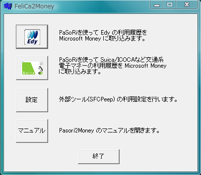

FeliCa2Money
News : '08/3/16: Version 2.4 公開しました。CSVファイルも取り込みできるようになっています。FeliCa2Money とは？
FeliCa2Moneyは、パソリを使って Edy などの電子マネーの履歴を読み取り、 電子明細(OFX形式ファイル)に変換するものです。これを使えば、電子マネーの履歴を ワンタッチで家計簿に記帳できます。
OFX ファイルには、Microsoft Moneyを始めとして、MasterMoney、家計簿マム、ミラクル家計簿、うっかりママの家計簿、Let's 家計簿など多くのソフトが対応しています。
FeliCa2Money は、以下の電子マネーに対応しています。この他、CSVファイルの取り込みにも 対応しています
- Edy
- Suica
- ICOCA
- PiTaPa
- PASMO
- nanaco
- ICOCA
必要環境
- USB ポートを備えた Windows PC : たぶん Windows Vista, XP, 2000 あたりなら問題なく動作します
- .NET Framework 2.0 以降
- SONY 非接触 IC カードリーダー/ライター (PaSoRi)
- PaSoRi 基本ソフトウェア
Version 2.0 から、.NET Framework が必要になりました。Windows Update などでインストールしておいてください。
また、Version 2.2 から、SFCPeep は不要となりました。スクリーンショット


ダウンロード
こちらからどうぞ。マニュアル
Ver 2.4 マニュアルWiki
Wikiソースコード
Subversion で取得できます。 URL は http://svn.sourceforge.jp/svnroot/moneyimport/trunk/FeliCa2Money.net/。 コンパイルには Visual Studio 2008 が必要です。謝辞
SFCPeep ならびに駅名/店舗名データベースを提供下さっているでんのすけさん(IC SFCard Fan)に感謝します。連絡先
- メール :
- 作者Webサイト : http://www.tmurakam.org